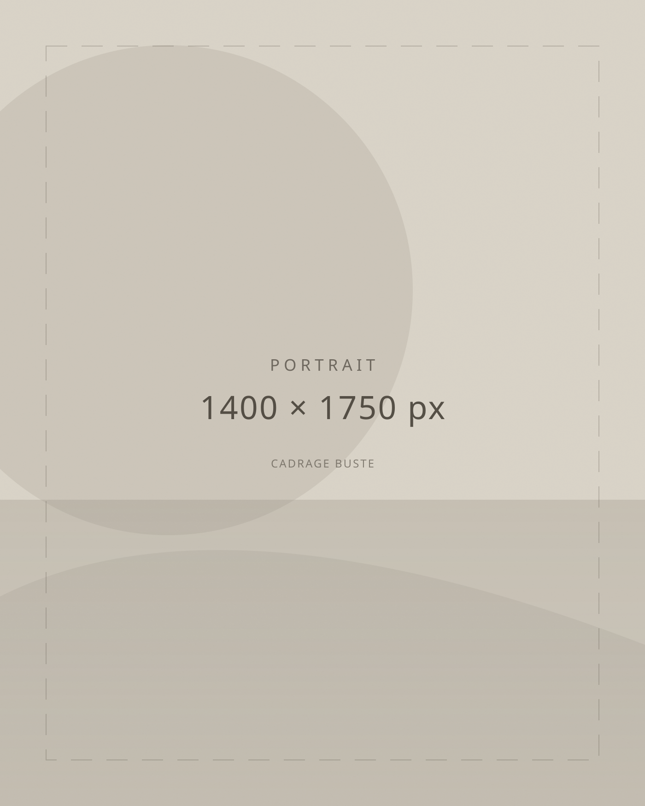

Philippe Grégoire Yacé
1920
1998
Président de l'Assemblée nationale de Côte d'Ivoire de 1959 à 1980, secrétaire général du PDCI-RDA, puis président du Conseil économique et social.

01
Contexte
Une trajectoire
et un pays qui naît.
Texte à rédiger. Situer le personnage dans la Côte d'Ivoire pré- et post-indépendance, son rôle aux côtés de Félix Houphouët-Boigny, et la place de l'Assemblée nationale dans la construction de l'État.
02
Biographie
Le parcours.
Enfance et formation
Texte à rédiger : Origines familiales, années de jeunesse, parcours scolaire et formation.
Les faits avancés ici devront être sourcés (CDC §6).
L'engagement politique
Texte à rédiger : Entrée en politique, rencontre avec Félix Houphouët-Boigny, rôle au sein du PDCI-RDA.
Les faits avancés ici devront être sourcés (CDC §6).
La carrière institutionnelle
Texte à rédiger : Vingt et un ans à la présidence de l'Assemblée nationale, puis le Conseil économique et social.
Les faits avancés ici devront être sourcés (CDC §6).
L'homme privé
Texte à rédiger : Vie familiale, convictions, rapports aux siens — dans le respect dû à la sphère privée.
Les faits avancés ici devront être sourcés (CDC §6).
Les dernières années
Texte à rédiger : Retrait de la vie publique, derniers engagements, disparition en 1998.
Les faits avancés ici devront être sourcés (CDC §6).
03
Chronologie
1920 — 1998.
Philippe Grégoire Yacé naît en 1920. Lieu et date exacte à confirmer par l'éditeur.
Étape à documenter. Parcours scolaire et formation professionnelle.
Étape à documenter. Premiers engagements et responsabilités.
Il accède à la présidence de l'Assemblée nationale de Côte d'Ivoire, fonction qu'il occupera pendant vingt et un ans.
Dates à documenter. Responsabilités au sein du parti.
Il quitte le perchoir et prend la présidence du Conseil économique et social. Détails à documenter.
Notice à compléter.
Citations
Emplacement réservé à une citation sourcée de Philippe Grégoire Yacé.
Source et date à préciser